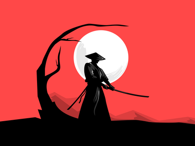

Resize width.
import Scissor from 'js-scissor';
// HTML: <img id="src1" src="img/sample1.jpg">
// <img id="dest1">
let src = document.querySelector('#src1');
let dest = document.querySelector('#dest1');
dest.src = (await new Scissor(src).resize(100)).toBase64();Resize height.


import Scissor from 'js-scissor';
// HTML: <img id="src2" src="img/sample2.png">
// <img id="dest2">
let src = document.querySelector('#src2');
let dest = document.querySelector('#dest2');
dest.src = (await new Scissor(src).resize(null, 100)).toBase64();Resize by specifying width and height (cover)
Resize so that the center is cut off while maintaining the aspect ratio.
import Scissor from 'js-scissor';
// HTML: <img id="src3" src="img/sample1.jpg">
// <img id="dest3">
let src = document.querySelector('#src3');
let dest = document.querySelector('#dest3');
dest.src = (await new Scissor(src).resize(100, 225, {fit: 'cover'})).toBase64();Resize by specifying width and height (contain)
Resize to fit the specified size while maintaining the aspect ratio.Blank areas are filled with the background color (default is black).
import Scissor from 'js-scissor';
// HTML: <img id="src4" src="img/sample1.jpg">
// <img id="dest4">
let src = document.querySelector('#src4');
let dest = document.querySelector('#dest4');
dest.src = (await new Scissor(src).resize(100, 225, {fit: 'contain'})).toBase64();Resize by specifying width and height (fill)
Resize to the specified size without keeping the aspect ratio.
import Scissor from 'js-scissor';
// HTML: <img id="src5" src="img/sample1.jpg">
// <img id="dest5">
let src = document.querySelector('#src5');
let dest = document.querySelector('#dest5');
dest.src = (await new Scissor(src).resize(100, 225)).toBase64();Resize the image read from the URL.
import Scissor from 'js-scissor';
// HTML: <img src="img/sample2.png">
// <img id="dest6">
let dest = document.querySelector('#dest6');
dest.src = (await new Scissor('img/sample2.png').resize(100, 225, {fit: 'cover'})).toBase64();